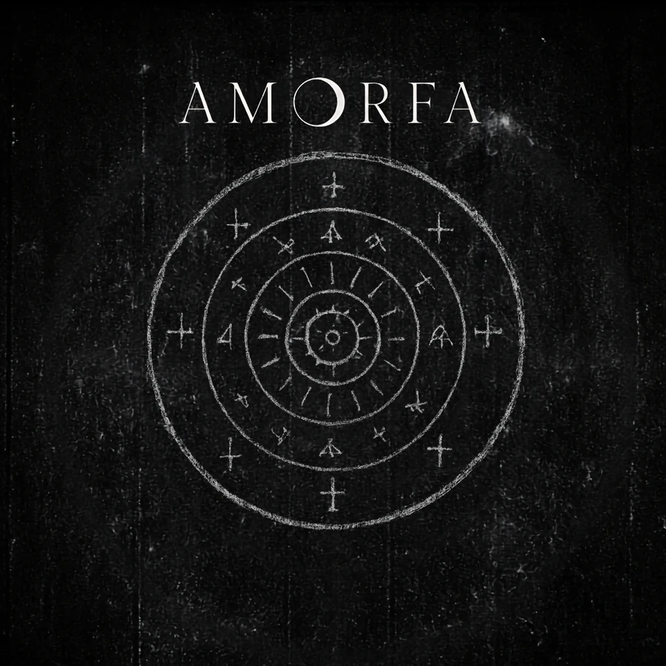

Álbum III da Antologia AMORFA
Teologia dos Fracassos Afetivos em Cama de Solteiro
A ausência vira religião doméstica.
O terceiro álbum da Antologia AMORFA transforma indisponibilidade em culto. Quarto, cama, chamada, sinal, altar, fé deteriorada e quase-amor: a ausência ganha mais poder que a chegada.
tracklist
Faixas
- 01Santo Errado
- 02Tarde Demais
- 03O Culto da Carne
- 04Lockdown (Terror Cult)
- 05Toque Fantasma
- 06Fracasso de Estimação
- 07Não Se Preocupa (Era Bituca)
- 08Cortesia do Medo
- 09Vinte e Três
- 10Quase Verdade
- 11Matéria Escura
- 12Para Onde Eu Fui?
- 13O Reino do Quase